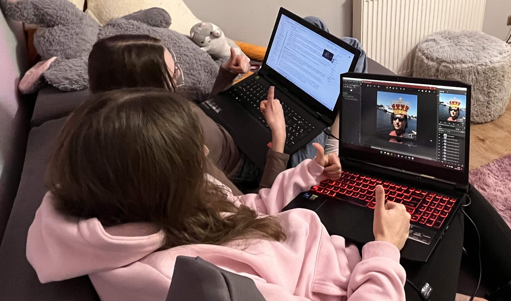
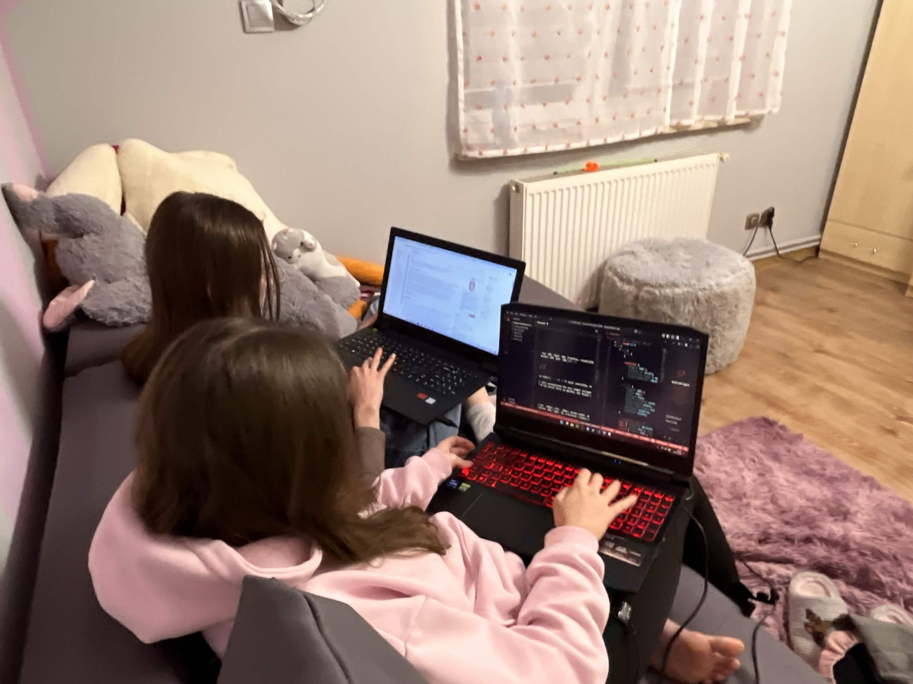

HTML
HyperText Markup Language
Hipertekstowy język znaczników
Czym są strony internetowe? <3
Fundament techniczny (Trio Webowe):
- HTML: Szkielet i struktura (tekst, nagłówki, linki).
- CSS: Styl i estetyka (kolory, układy, czcionki).
- JavaScript: Interaktywność (animacje, formularze).
Sposób działania: Strony to pliki przechowywane na serwerach. Gdy wpisujesz adres URL, Twoja przeglądarka pobiera te dane i „tłumaczy” kod na obraz widoczny dla człowieka.
Rodzaje:
- Statyczne (rzadko się zmieniają)
- Dynamiczne (generowane na bieżąco, np. Facebook).
Dostępność: Dzięki standardom W3C strony działają niemal na każdym urządzeniu – od smartfonów po lodówki z ekranami.
Czym jest HTML
to fundament każdej witryny internetowej. Nie jest językiem programowania, lecz językiem znaczników, który mówi przeglądarce, co znajduje się na stronie.
Historia
W 1980 roku fizyk Tim Berners-Lee, który pracował w ośrodku naukowym CERN, stworzył system o nazwie ENQUIRE. Służył on do porządkowania i udostępniania dokumentów naukowych. Najważniejszą jego cechą było to, że użytkownik mógł przechodzić między dokumentami za pomocą odnośników (linków), nawet jeśli znajdowały się w różnych miejscach na świecie.
W 1989 roku Tim Berners-Lee razem z inżynierem Robertem Cailliau zaproponowali stworzenie systemu hipertekstowego działającego w sieci Internet. Ich pomysły były bardzo podobne, dlatego rok później połączyli je w jeden projekt. W 1990 roku powstał projekt World Wide Web (WWW), który został zaakceptowany przez CERN i stał się podstawą dzisiejszych stron internetowych.
Logo HTML5
Logo HTML (często widzisz je jako pomarańczową tarczę z cyfrą 5) pochodzi od wersji HTML5 i zostało zaprojektowane tak, aby symbolizować kilka rzeczy naraz:
- 1. Tarcza = fundament internetu 🛡️: Tarcza ma pokazywać, że HTML jest podstawą stron internetowych. Każda strona w sieci w pewnym stopniu opiera się właśnie na HTML.
- 2. Kolor pomarańczowy 🟧: Kolor wybrano, żeby kojarzył się z energią, kreatywnością i nowoczesnością.
- 3. Cyfra „5”: To po prostu odniesienie do wersji HTML5, która była dużym krokiem w rozwoju standardu.
- 4. Styl superbohatera 🦸: Projektanci chcieli pokazać, że HTML5 jest jak „superbohater webu”. Dlatego logo wygląda jak tarcza superbohatera z numerem 5.
Anatomia strony: Z czego składa się kod?
Wyobraź sobie, że budujesz cyfrową postać:
- <!DOCTYPE html> (Akt urodzenia): Krótka informacja dla strony „Słuchaj, jestem nowoczesną stroną”.
- <html> (Skóra/Ciało): Wielki worek, w którym mieści się wszystko.To, co nie jest w środku <html>, dla przeglądarki nie istnieje.
- <head> (Mózg): Myśli i instrukcje, których użytkownik nie widzi. Znajduje się tu tytuł strony (ten na karcie w górze przeglądarki), ustawienia języka (polskie znaki) i "przepis" na to, jak strona ma wyglądać.
- <body> (Twarz i Serce): Wszystko, co widzisz po wejściu na stronę. Tu lądują teksty, zdjęcia, przyciski, filmiki z YouTube i inne dziwadła które są na stronie
Najważniejsze "pustaki do budowy":
- Nagłówki <h1> – <h6>
- Akapit <p> Skrót od paragraph. Używamy go do pisania zwykłych treści, artykułów czy opisów.
- Link/Teleport <a> Skrót od anchor (kotwica). To najważniejszy element internetu – pozwala "przeskoczyć" na inną stronę po kliknięciu.
- Obraz <img> Wstawia zdjęcie lub grafikę. W przeciwieństwie do innych, ten znacznik nie potrzebuje "zamknięcia"
- Enter <br> Skrót od break. Wymusza przejście do nowej linii
HTML + CSS + JavaScript
Nowoczesne strony wykorzystują trzy technologie:
- HTML (struktura)
- CSS (wygląd)
- JavaScript (interaktywność)
SAM HTML TO NIE WSZYSTKO!
Razem tworzą pełną stronę internetową. Tak wyglądałaby sam HTML ...
Nagłówek strony bez CSS
To jest zwykły tekst bez stylizacji. Niebieski link
- Element listy
- Element listy
- Element listy
Dlaczego HTML jest królem internetu?
(Tak jak sor jest królem świata )
- Prosty do nauki: Niski próg wejścia. Nie musisz być matematycznym geniuszem. Składnia opiera się na prostych słowach z języka angielskiego
- Fundament internetu: Każda strona, którą odwiedzasz (Facebook, YouTube, Google), pod spodem używa HTML
- Działa wszędzie: Nie potrzebujesz specjalnego oprogramowania. Kod HTML otworzysz w każdej przeglądarce (Chrome, Safari, Firefox)
- Doskonała współpraca: Łatwa integracja. HTML to "szkielet", na który łatwo nałożysz "ubranie" (CSS) i "mięśnie/ruch" (JavaScript).
- Lekkość i szybkość: Pliki HTML to zwykły tekst. Są bardzo małe, więc ładują się błyskawicznie nawet przy słabym połączeniu internetowym.
- Całkowicie darmowy: Nie musisz kupować licencji, aby tworzyć strony. Standardy HTML są rozwijane przez społeczność i dostępne dla każdego za darmo.

🏆 Twoje 3 kroki do zrozumienia sieci
- 1. Strona to nie magia, to instrukcja.
- 2. HTML to fundament (Szkielet).
- 3. To dopiero początek!
"Każda wielka aplikacja, od Facebooka po YouTube, zaczynała się od pojedynczego znacznika <html>."
PO ZROBIENIU TEJ STRONY CZEKA NAS PROSTA DROGA DO ZOSTANIA NASTĘPNYM MARKIEM CUKERBERGIEM
Dziękujemy za uwagę!

